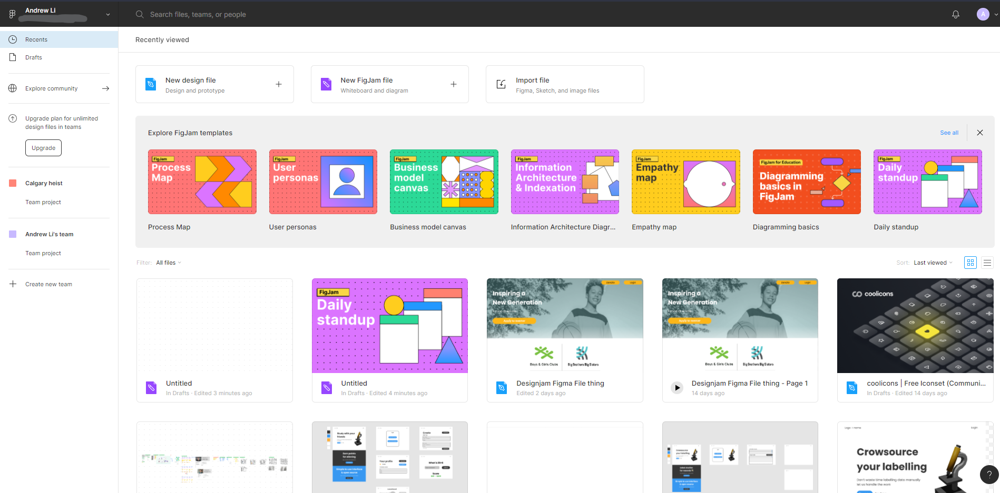
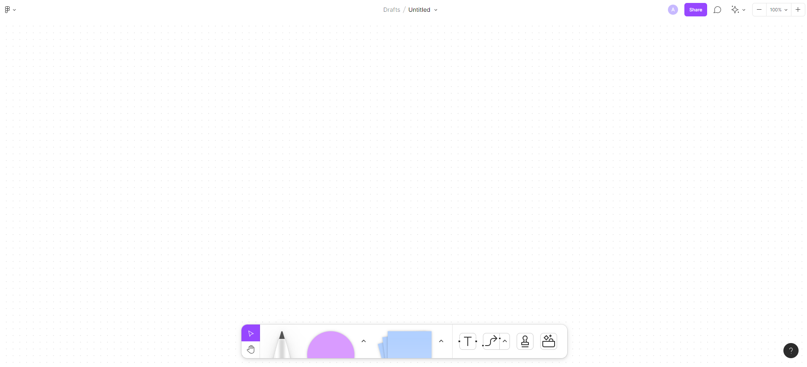
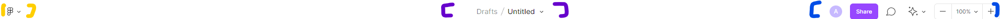
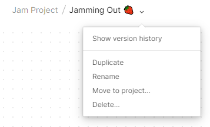
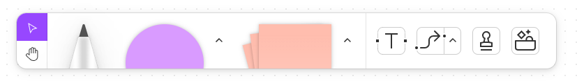
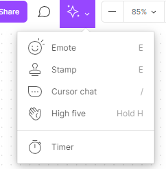
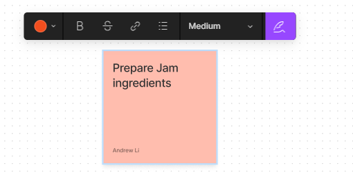

This is a doc for using Figma effectively
Figma is a design platform that resembles that of Adobe Illustrator but is easy to share and collaborate. Figma has two main products, Figma Design file and FigJam file. The main file for UX/UI design will be with the design file while the FigJam is more for brainstorming. Currently as of writing, FigJam is in beta testing
There are new FigJam templates but we will stick with a new blank project file to explore the documents from scratch. To start off, sign in or register for a figma account on figma.com landing screen by clicking on Log in or Sign up button on the top right (see below).
⚠ NOTE: if you are already logged in you will see the overview screen so you can skip this step
Once you are in, you will be presented with the overview screen much like the one below. Of course yours may look slightly different.

Starting from the top navigation bar going from left to right

| If you click your name or email it will open a dropdown to your account(s) | Search bar to search by files, teams or people | If you click on the bell icon you will see notifications |
|---|
If you click on you profile picture

Moving on to the sidebar, you can see in order of top to bottom
⚠ Note: a team can have multiple project which can contain multiple project files
If you want to create a new team, click create team from above and follow the prompts

In you main overview (see above), we have options to (from top to bottom):
Figma design file is what most people know Figma for and will the the focus of this section. Assuming you created a new blank design file from the previous steps, you will be brought to a page that looks like the following:

We will explore this 1 piece at a time starting with the header strip
First let's name our FigJam file. This is done by clicking on the Untitled text in the header (red section below)

If you want to change the team or project is under, click on drafts and select a team/project or create a new team/project

If you click on the arrow in the red section (see above), you can
üöß FigJam is currently in beta at the time of writing this üöß
FigJam are a more recent addition to figma.com and as stated previously, is mostly used for brainstorming ideas. There are many tools in a FigJam file that help in this process. First let's go through the UI layout

First thing to notice is you are open to a canvas with a tool bar at the bottom and a header strip.
First let's name our FigJam file. This is done by clicking on the Untitled text in the header (purple section below)

If you want to change the team or project is under, click on drafts and select a team/project or create a new team/project

If you click on the arrow in the purple section (see above), you can

The tool bar contains (from left to right):
These can be dragged onto the canvas to be placed or clicked to activate the tool and click on the canvas to instantiate an instance
Since FigJam is more for interacting and brainstorming, there are ways to communicate with your team members like emotes, reactions, text messages

In addition you can set a timer to your brainstorming
Now we can get to creating! For this we will be creating the start to making strawberry jam üòã
first drag in a sticky note
in the image below you will see options from left to right to

If you hover over any of the 4 sides of the sticky note u will get a plus icon. If you click and drag the icon you can create another sticky note with a arrow pointing to it
You can also get an arrow to attach to a sticky note by having two independent sticky notes and doing step 3 but drag the would be new sticky note to the already existing one (see below gif)

Chain these interactions together and you can achieve something like this:

Congrats on completing your first FigJam üéâ
Using these simple interaction and the simple building block you can do anything your brain can storm up!
To share your Figma file click on the blue share button on the header and it will being you to this popup.

Here you can invite people to view only or edit the file. Please note that by default anyone with the link can view it and you would need to click on Anyone with the link dropdown to change it to Only people invited to this file. Otherwise you can publish to the community using the second tab on the top ribbon or even embed the figma file as a widget (as HTML) by clicking on Get embed code
Figma has 3 tiers for both Figma and FigJam.
⚠ Note for STUDENTS OR EDUCATORS, Figma profession is FREE

Figma has many fonts coming from Google fonts. If you have a custom font in mind with the font files (most likely ttf or otf file) you need to:
Figma files can be shared via a .fig file format by clicking on the Figma Icon and selecting file->Save local copy...
Also note that Figma has a desktop version (probably an electron port of the website) for MacOS and Windows
General Figma docs: https://help.figma.com/hc/en-us
Installing Fonts: https://help.figma.com/hc/en-us/articles/360039956894-Access-local-fonts-on-your-computer
Figma mirco interactions: https://www.youtube.com/watch?v=LnPEGhE90r4
Figma desktop: https://www.figma.com/downloads/
Pricing: https://www.figma.com/pricing/
This tutorial is under